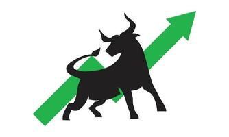

MSFT Stock, October 23 2023.
Posted by Robert Jiang on December 24 2023
Introduction:
Hello everyone, I'm Robert Jiang and I'm a senior at New York University - Stern this year. I've been investing for around 3 years as a hobby. My goal with investing as of now is still learning the ins and outs of the stock market, I plan to start taking it more seriously after college.
The trade: Shares of MSFT at 329.32$ on October 23, 2023.
I found myself considering an investment in Microsoft stock priced at around $329 on October 23, 2023. Microsoft had been on a steady incline for the past year in a row with over a 60% increase, showcasing a consistent growth trajectory. Despite the upward climb, I was bullish on the stock due to a blend of macro and micro-level factors that pointed to its potential for sustained growth. At the macro level, the tech industry's landscape was evolving rapidly, and Microsoft's strategic position within it was undeniably influential. Considering their ownership of OpenAI, a pioneering force in the AI realm, it was evident that Microsoft was poised to dominate the AI space, potentially reaping significant financial rewards. The prospects of monopolizing this burgeoning sector hinted at substantial gains for shareholders, bolstering my confidence in the stock's future. Delving into the micro-level details, Microsoft's ongoing initiatives and strategic decisions further fortified my belief in its long-term growth potential. The company's robust mission and recent strategic moves were key indicators. Their astute leadership and innovative approach were apparent in their plans and partnerships. One pivotal factor that cemented my bullish outlook was Microsoft's pioneering involvement in the AI domain. Understanding the groundbreaking advancements in AI and its increasingly integral role across industries, backing a tech giant like Microsoft, with its foothold in AI through OpenAI, seemed not just wise but almost inevitable. Analyzing Microsoft's third-quarter fiscal report revealed a multitude of reasons for optimism. Their diversification and expansion strategies were on point, mirroring their commitment to growth. I observed their foray into various sectors, leveraging AI to enhance products and services, thereby consolidating their market presence. Despite noting a relatively high P/E ratio, which typically raises concerns about overvaluation, I remained convinced of Microsoft's long-term potential. The synergy between their AI initiatives and their core business functions indicated a trajectory that transcended short-term fluctuations. My decision to invest in Microsoft at $329 was not driven by the anticipation of immediate returns, but rather a belief in the company's capacity to lead and innovate in the evolving tech landscape. The ownership of OpenAI only added to the conviction that this stock held promise for sustained growth and long-term value appreciation.
Bearish or Bullish?
Financial Reports and Statistics:
Total Annual fiscal Report, July 24 2024Here are someother important Financial Statistics as of September 30 2023:
| Measure | Data |
|---|---|
| Market Cap | 2.784T $ |
| Forward P/E | 36.23 |
| Profit Margin | 35.31% |
| Diluted Earnings Per Share | 10.34 |
| EBITDA | 108.53B |
| Debt/Equity Ratio | 47.8% |
| 52 week change as of trade date | 58.08% |
| Dividend Ratio | 0.8%, 3 times per year |